1. Mac下配置Python
- 24.8.24 created
1.1. 安装anaconda
- 打开 https://www.anaconda.com/download ，输入邮箱。
- 打开邮箱，点击链接，进入下载页面。
- 选择“Download for Mac“，根据自己电脑CPU，选择合适的版本下载。
- 双击下载后的文件，傻瓜式的安装即可。
- 安装完成后，在applications里将会多出一个名字为
Anaconda Navigator的应用。 - 重新打开命令行，输入
python --version，如果版本为3.12.4及以上，说明安装成功了。
1.2. 下载VSCode
1、打开 https://code.visualstudio.com/download 。
2、根据自己电脑CPU，选择合适的版本下载。
3、下载完成，然后解压缩后是Visual Studio Code.app。
4、将Visual Studio Code.app移动至applications中，安装完成。
5、使用anaconda的python版本
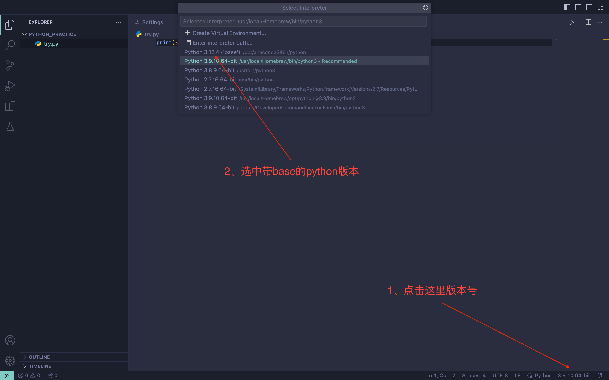
1.3. 使用VSCode
1、新建python文件夹，这里是的路径为~/Document/code/python/python_practice。
2、 打开VSCode，设置文件夹目录为步骤一新建的路径。
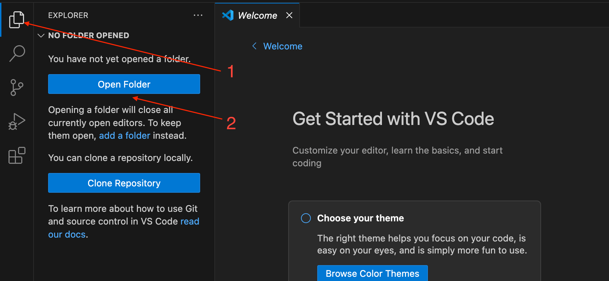
3、鼠标移动至箭头位置，出现新增图标，新建源代码文件。 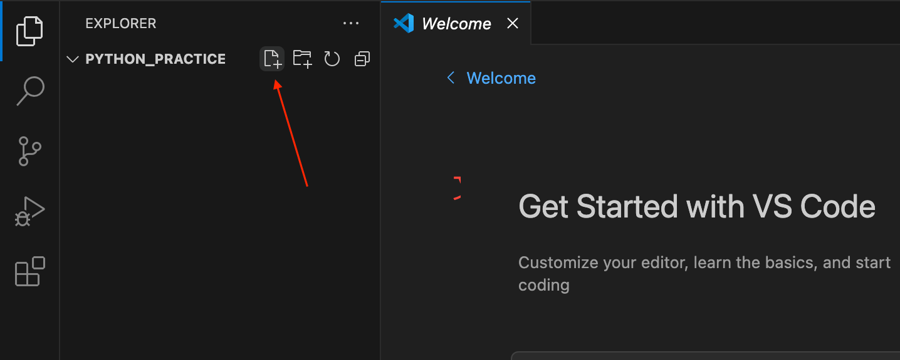
1.4. 安装VSCode插件
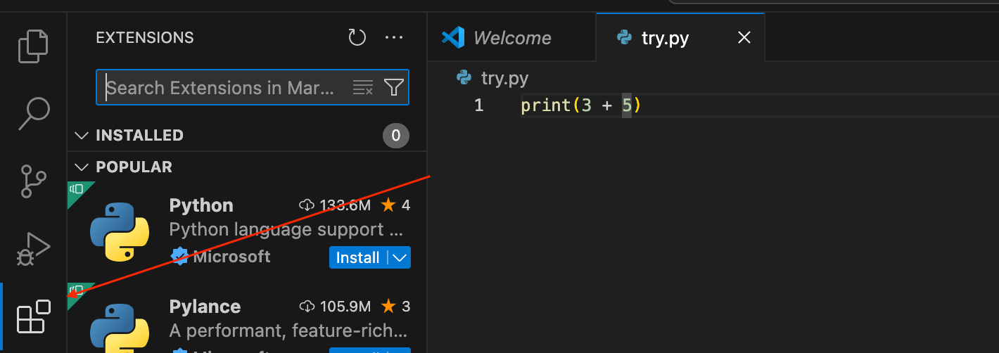
安装完插件后，建议重启
VSCode。
1.4.1. Python
搜索python，安装python插件。 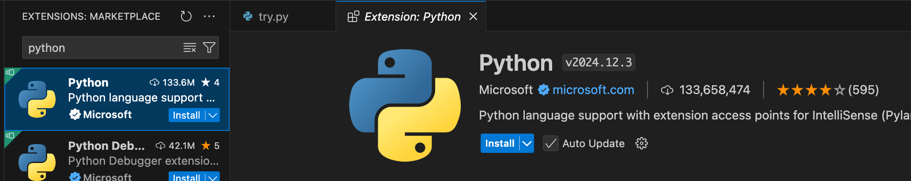
1.4.2. Code Runner
Code Runner效果:
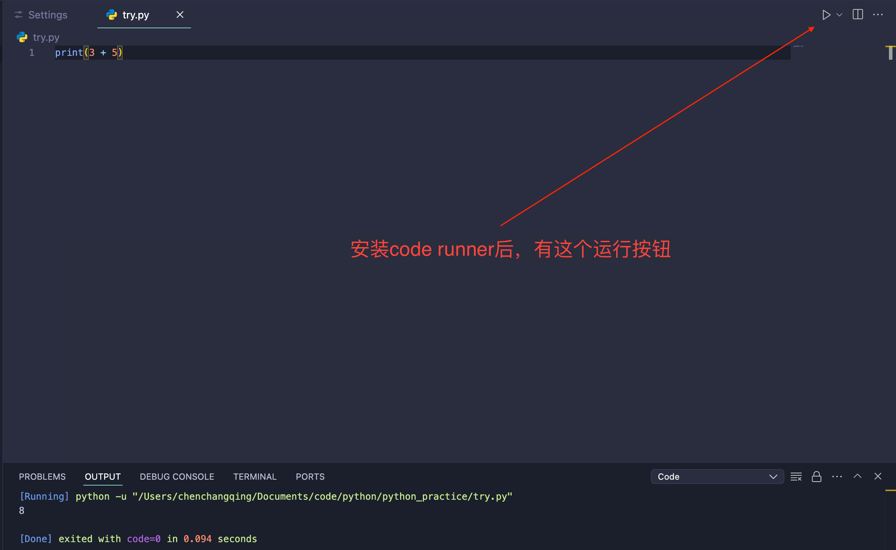
1.4.3. Material Icon Theme
为不同类型的档案标记不同的Icon。
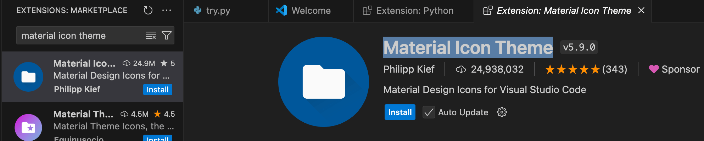
配置主题，可以搜索Community Material，选择Community Material Theme Palenight High Contrast。
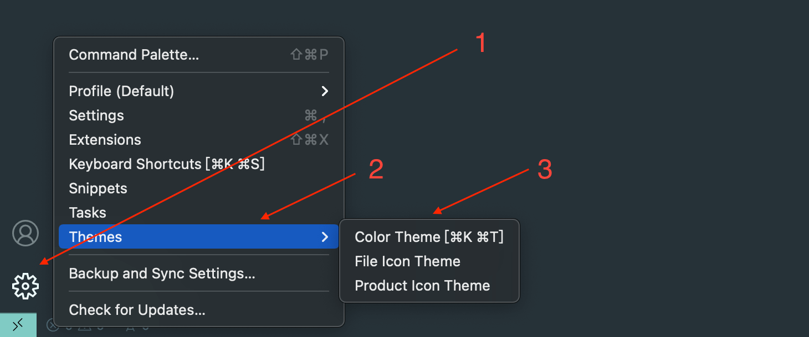
1.4.4. autopep8
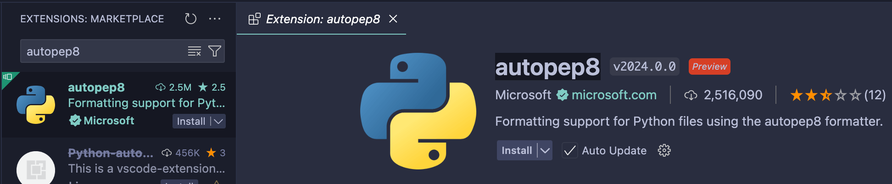
1、打开format on save
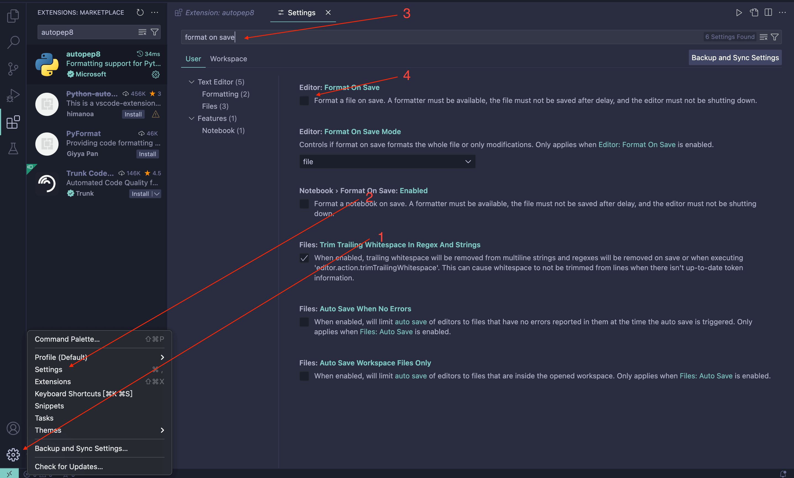
2、选中autopep8
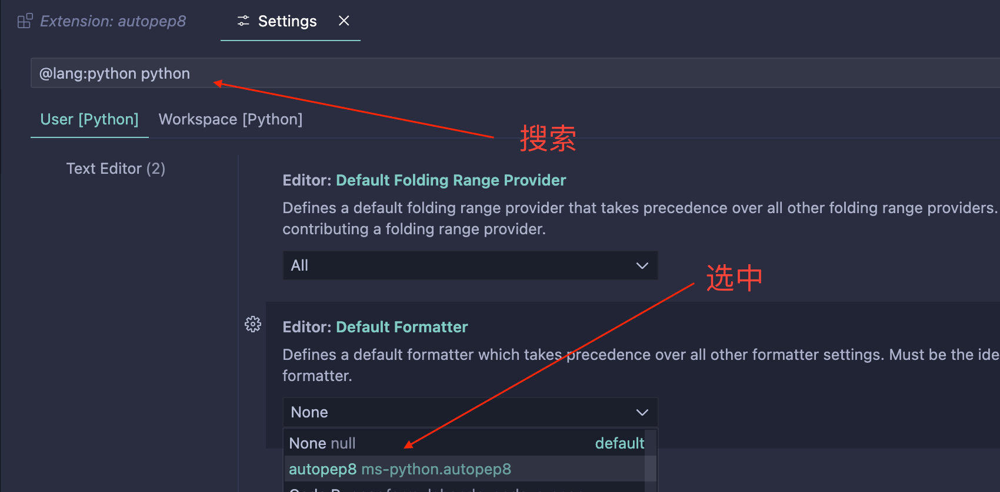